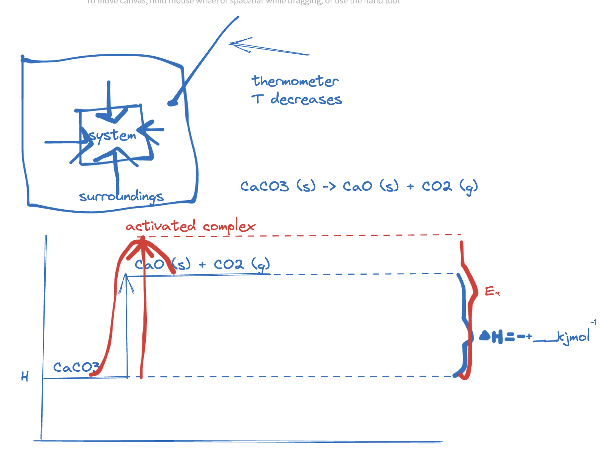
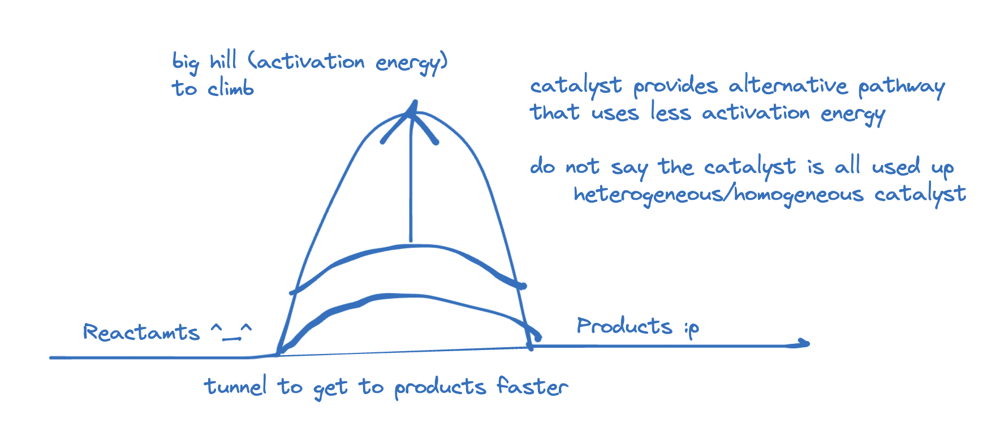
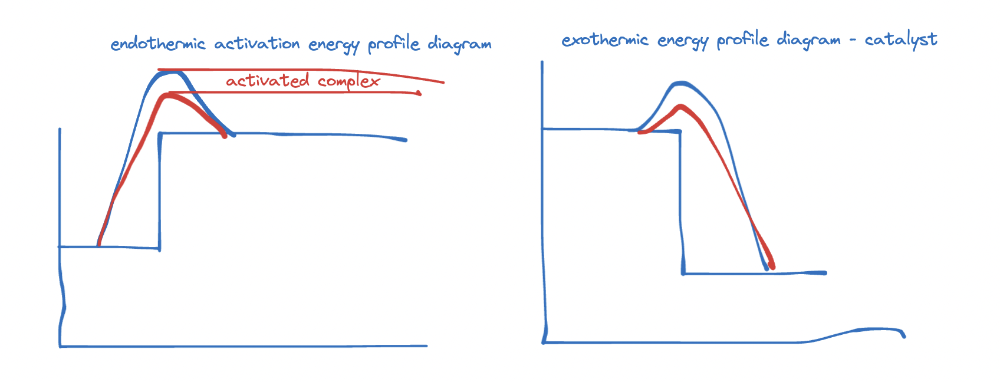

enthalpy change
- = change in enthalpy
systems and surroundings
- done in year 10, but start from beginning anyways.
reactant -> product
- reactants and products - consider when chemical reaction happens, reactants turn into products.
- reactants -> products
- reactants have enthalpy, and products has enthalpy.
- when thinking of substance with bonds, the bonds in reactants are broken (requiring energy)
- when products are made, new bonds form. (energy is given out)
- overall enthalpy change requires how much energy required is to break bonds, and energy is given out, and the difference between the two.
system & surroundings
- system transfers heat to and from surroundings - why? because stronger bonds form (products) - exothermic reactions
energy cannot be created or destroyed
- enthalpy profile diagram
- Ea = Minimum amount of energy required for reaction to occur. :]
exothermic reaction
- energy gets released (ex-it),
- surrounding gets hot, heat energy is released.
- neutralisation, respiration and combustion are good examples of exothermic reaction. (energy is given out)
- test tube with solution neutralisation reaction, energy is released from system to surroundings, you can feel test tube getting hotter.
- energy cannot be created or destroyed, so in neutralisation reaction, it is transferred from system to surroundings as heat energy.
- (recap)
- exothermic reactions release thermal energy into surrounds.
- exothermic reactions can occur spontaneously and some are explosive
- reaction with metals and acids
- neutralisation reactions of acids and alkalis
- combustion
- respiration
- displacement reactions of metals
- reaction with metals and acids
- exothermic reactions can occur spontaneously and some are explosive
endothermic reaction
- 15-8
- you can feel test tube gets cold in an endothermic reaction, as energy transfers from surroundings to system (en-try)
- THERMAL DECOMPOSITION PRACTICE QUESTION
- 
Catalyst
- EXAMPLE: Two villages
- one called reactants, one called products,
- between reactants and products, there exists a mountain called activation energy.
- 
- photo synthesis is good example of endothermic
- most chemical reactions are exothermic.
Internal Energy
- molecules within a body all possess kinetic energy (). This is the energy due to their random motion
- the molecules also contains potential energy () due to the chemical bonds holding them together and the bonds within their nuclei.
- the sum of all these molecular and kinetic and potential energies represents the body’s internal energy (u)
TEMPERATURE AND HEAT
- the temperature of a body is a measure of the kinetic energy of its molecules. temperature indicates in which direction heat will flow when two bodies are placed close together.
- thermal energy is the component of a body’s internal energy due to its temperature. Thermal energy can be supplied to a body by heating it.
- Heat is the thermal energy transferred from a body at a high temperature to a body at a lower temperature due solely to the temperature difference. It is measured in Joules, not or K.
- thermal energy transfers to establish thermal equilibrium where two bodies of different temperature reach same temperature as the body of higher temperature shares its temperature with the body of lower temperature.
what is enthalpy.
- symbol is H.
- measure of the energy stored in a system , which cannot be measured directly.
- instead, you can calculate/measure enthalpy change.
what is enthalpy change?
- during reactions, the enthalpy of the reactants and the products is not the same. This results in energy being either given out or taken in during the reaction. This energy is the enthalpy change, (‘delta H’)
- initial temperature.
- final temperature.
-
- T <- difference in temperature.
- c <- specific heat capacity of water. (measured in g in chemistry. measured in kg in physics)
- m <- mass of water that was used to be heated.
huh
boltzmann distribution
- effect of catalyst: increases frequency of collisions
- dont write: more collisions